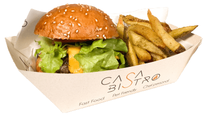

$ 3.99
Hamburguesa Jr
Incluye papas fritas, bebida y salsas de casa
Conciéntele a tu peque y aprovecha la promo del 10% de descuento en platillos Junior.
¡Lo Quiero!$ 3.99
Conciéntele a tu peque y aprovecha la promo del 10% de descuento en platillos Junior.
¡Lo Quiero!Casa Bistro es un emprendimiento de comida rápida pensado para toda la familia.

Casa Bistro se caracteriza por tener productos de calidad para brindar experiencias y así satisfacer necesidades en cada consumo.
Los empaques de un solo uso terminan generando gran cantidad de residuo perjudicial para nuestro planeta. Por eso Casa Bistro toma la inciativa de disminuir el uso del plástico por el empaque biodegradable con el objetivo de crear conciencia en cada cliente de ayudar al planeta en poner en práctica las 3R (reciclar, reducir y reutilizar).


Quito - Ecuador
Autopista General Rumiñahui
Puertas del Sol, Ciudad Jardín 2
(Vía al valle de los Chillos)
Entre puentes 1 y 2
Código postal: 170145
Como llegar: Auto Bistro
Martes a Sábado: 12:00 - 21:00
Domingo: 12:00 - 20:00
096 375 8658
(02) 2 835 418
Síguenos